Sedm síní a jedna cesta. Popořadě, protože každý modul stojí na tom předchozím. Vstup do kterékoli síně a uvidíš, co v ní je.
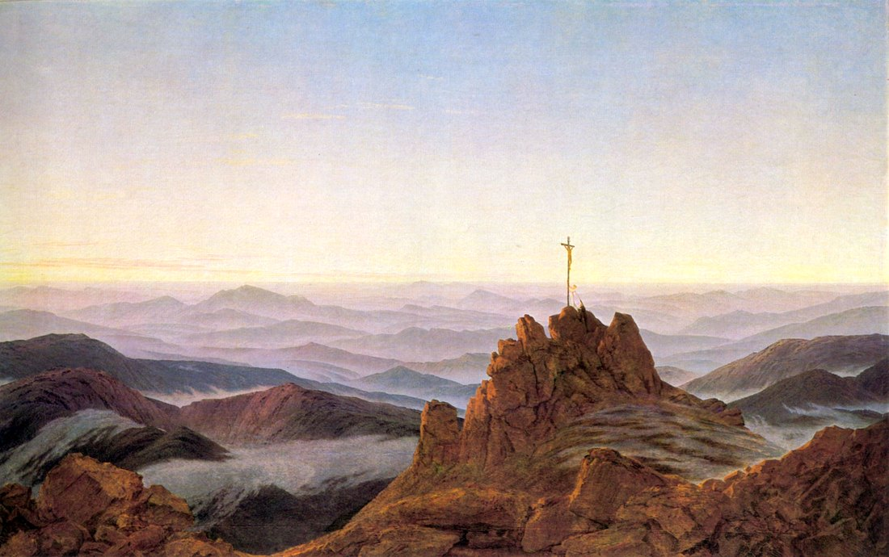
Caspar David Friedrich · Ráno v Krkonoších · 1810/11
Modul 0
Vstup
Než začneš. Mapa a vstupní diagnostika, ze které ti vyjde, kterým modulem začínáš a jakým tempem.
2 lekce · 14 min čtení
0.1Začni zde
Mapa, pět pravidel Akademie a první týden den po dni.
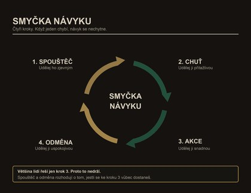
0.2Vstupní diagnostika
Dvacet pět otázek. Vyjde ti, kterým modulem začínáš a jakým tempem.
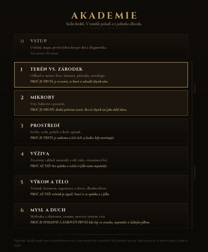
◆
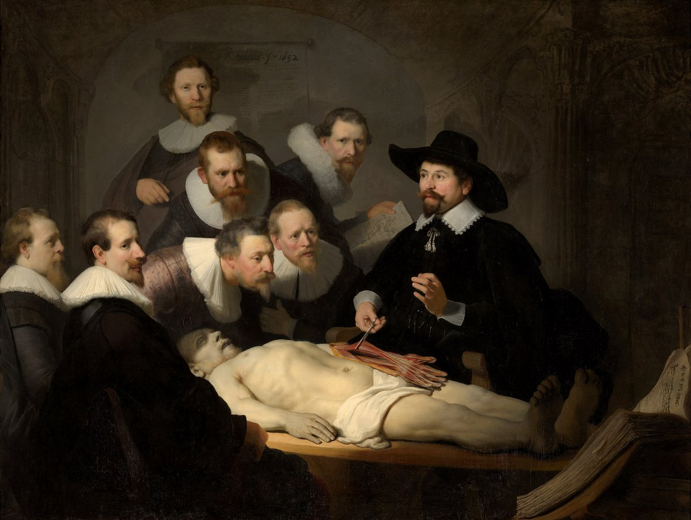
Rembrandt van Rijn · Anatomie doktora Tulpa · 1632
Modul 1
Terén vs. zárodek
Proč je první: je to teorie, ze které si odvodíš zbytek sám. Bez ní zní všechno ostatní jako další dieta.
32 lekcí · 5 h 57 min čtení
1.1Co je nemoc
Odkud se nemoc bere, když ne zvenku. Dvě příčiny, ze kterých plyne všechno ostatní.
1.1.1Dvanáct axiomů terénu
1.1.2Co nemoc nezpůsobuje
1.1.3Toxicita: skrytá zátěž
1.1.4Deficit: co chybí
1.1.5Fyzické trauma, jizvy a návrat toku
1.1.6Trauma není kořenová příčina nemoci
1.1.7Žádné zázračné pilulky
1.1.8Spirála a kompas terénu
1.2Terén vs. germ teorie
Proč si myslíme, že nemoc přichází zvenčí, a kdo nás to naučil.
1.2.1Miescher 1869: co se vlastně našlo v hnisu
1.2.2Kossel: odkud se vzala A, G, C, T a U
1.2.3Chargaff 1950: čísla, která vyrábí metoda
1.2.4Watson a Crick 1953: model jako fakt
1.2.5Sto let pokusů o nakažení
1.2.6Geny nezpůsobují nemoc
1.3Imunitní systém jako čištění
Co ty buňky doopravdy dělají, když nebojují.
1.3.1Imunitní systém jako obrana neexistuje
1.3.2Úklidová četa, tolerance a lymfa
1.3.3Protilátky nejsou specifické
1.3.4Zánět není kořenová příčina
1.3.5Autoimunita
1.3.6Alergie
1.3.7Dvacet dva přerámování
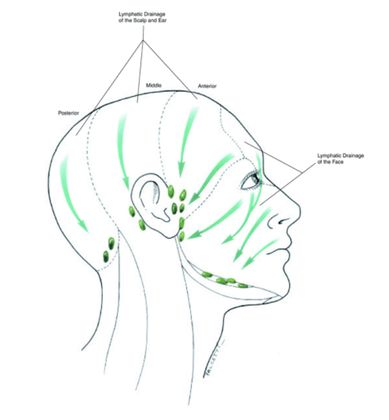
1.4Symptomy a nosologie
Jak vzniká diagnóza a proč to není totéž co nemoc.
1.4.1Základy: co je příznak
1.4.2Nosologie: kdo rozhoduje, co je nemoc
1.4.3Symptom jako uzdravování, ne nemoc
1.4.4Příznaky: tělo, psychika, duch
1.4.5Aplikované dekódování příznaků
1.4.6Protokoly: když základy už nestačí
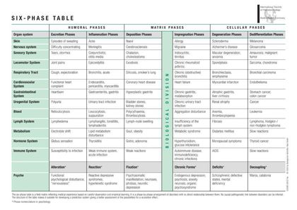
PLAYBOOK · Akutní nemoc: co dělat, když onemocním
Co dělat, když onemocníš. Stránka, kterou si otevřeš s horečkou v posteli.
◆
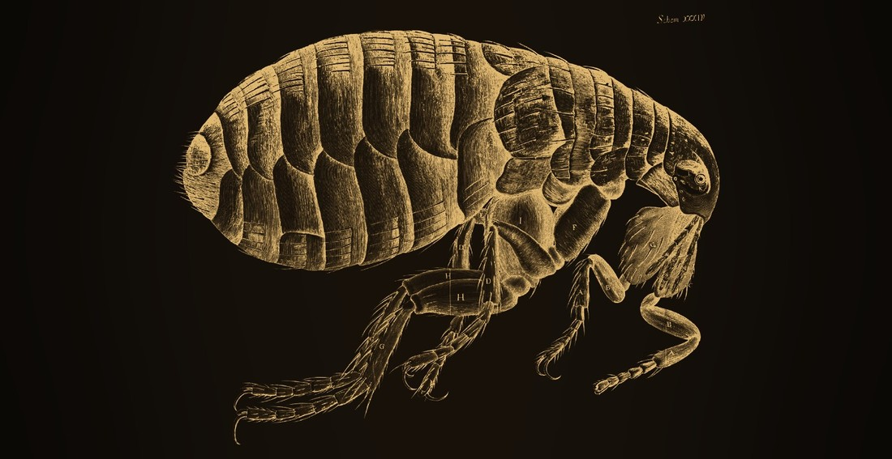
Robert Hooke · Blecha · Micrographia · 1665
Modul 2
Mikroby
Druhá polovina teorie. Viry, bakterie a paraziti. Tady se láme, co si o nemoci myslíš.
21 lekcí · 5 h 39 min čtení
2.1Viry
Čím je to, čemu se říká virus. Nejsilnější materiál celé Akademie.
2.1.1Buňka, váček a dvě cesty ven
2.1.2Jak váček vzniká a co ho žene nahoru
2.1.3Proč to nikdo neumí odlišit
2.1.4Co z toho plyne pro tebe
2.1.5Epidemie a pandemie
2.2Bakterie a paraziti jako čističi
Organismy, které jsou vidět. Tady už se nedá schovat za „neizolovali to".
2.2.1Proč napadáme tohle paradigma
2.2.2Co je parazit
2.2.3Metodologie pod mikroskopem
2.2.4Prvoci: fantomoví patogeni?
2.2.5Helminti: vidíme je a nerozumíme jim
2.2.6Ektoparaziti: vši, roztoči, klíšťata
2.2.7Selhání pokusů a mýtus přenosu
2.2.8Terén jako určující faktor
2.2.9Co dělají čisticí kúry
2.2.10Archetyp parazita: kdo koho vysává
2.2.11Co je bakterie a čím se živí
2.2.12Proč se někde přemnoží
2.2.13Ten samý mikrob u zdravého člověka
2.2.14Co s tím doopravdy dělat
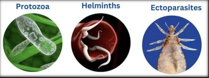
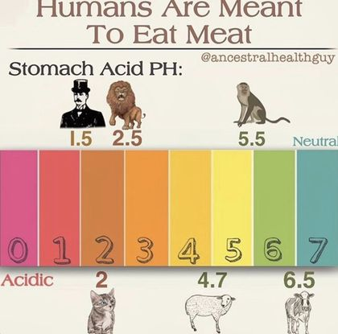
◆
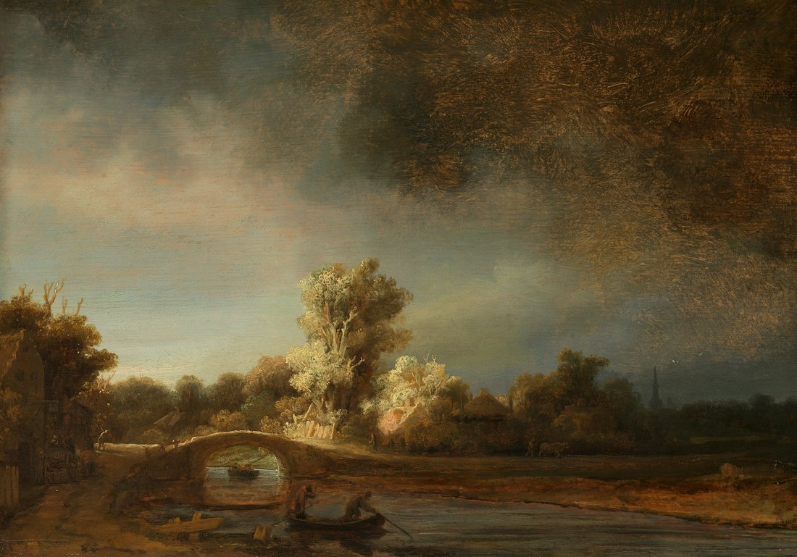
Rembrandt van Rijn · Krajina s kamenným mostem · kolem 1638
Modul 3
Prostředí
Proč je třetí: je skoro celý zadarmo a řeší těch třiadvacet hodin denně, kdy netrénuješ.
11 lekcí · 1 h 35 min čtení
3.1Světlo a cirkadiánní rytmus
Nejsilnější a nejlevnější páka, kterou člověk má. Proč se v Česku od října do března nedají vyrobit určité věci ze slunce, ať se snažíš jak chce, a co s tím.
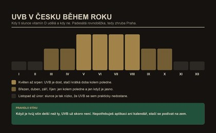
3.2Voda a elektřina
Co je voda kromě H2O, proč není jedno, odkud je, české prameny a rozbory, a co s tím má společného elektřina v těle a kolem něj.
3.3Pohyb a dech
Ne cvičení. Pohyb jako výchozí stav těla a dech jako věc, kterou většina lidí dělá špatně čtyriadvacet hodin denně.
3.3.1Pohyb není cvičení
3.3.2Deset předkovských principů
3.3.3Denní zdivčení
3.3.4Chodidla jako základ
3.3.5Výchozí pozice
3.3.6Dech života a mozkomíšní mok
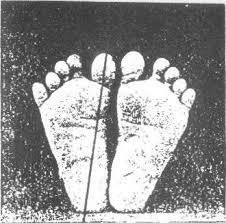
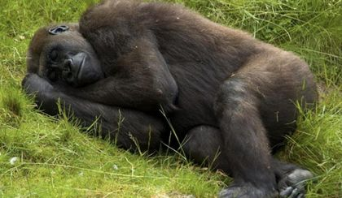
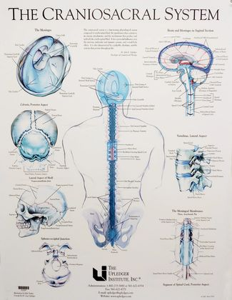
3.4Spánek
Třetina života na jednom místě. Nejlepší poměr mezi úsilím a výsledkem v celé Akademii.
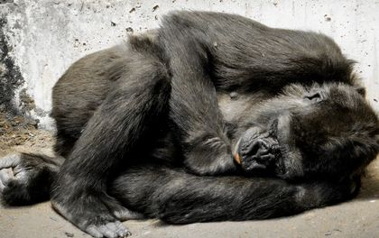
Protokol PROSTŘEDÍ · světlo, spánek, uzemnění
Světlo, spánek a uzemnění poskládané do jednoho týdne.
◆
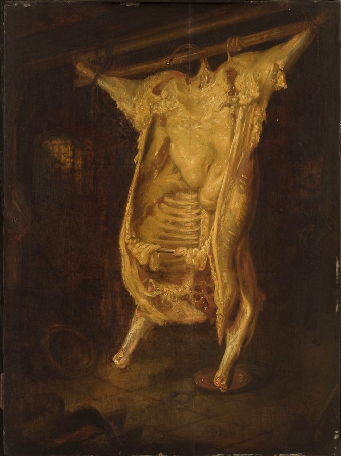
Rembrandt van Rijn · Poražený vůl · 1655
Modul 4
Výživa
Proč až teď: bez spánku a světla ti jídlo samo nepomůže. Pak ale rozhoduje, z čeho se tělo staví.
17 lekcí · 2 h 54 min čtení
4.1Živočišný základ a syrová strava
Co jsme jedli, než někdo začal psat doporučení. Proč je rozdíl mezi syrovým a vařeným větší, než se čeká. A český sourcing od A do Z.
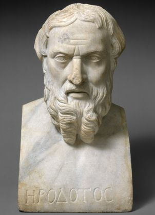
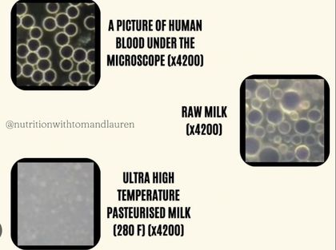
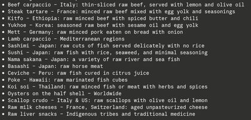
4.2Minerály a sůl
Rozdíl mezi minerálem a prvkem, který rozhoduje o všem ostatním. Proč horčík v kapsli něco dělá a přesto nic neřeší.
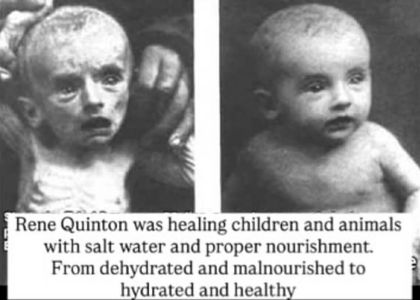
4.3Tuky
Nejvíc pomluvená živina v dějinách. Kdo napsal ta doporučení a co se děje, když se živočišný tuk nahradí průmyslovým olejem.
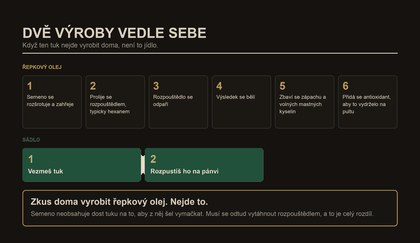
4.4Vitamínová lež
Jak se vitamín stal myšlenkou, která nikdy nebyla viděna. Kde se doplňky reálně vyrábějí a komu patří. A čtrnáctidenní protokol na vysazení.
4.4.1Jak se vymyslel vitamín
4.4.2Lekce o vědecké metodě
4.4.3Deficitní nemoci: beri-beri, kurděje
4.4.4Prvky, matrice a mýtus hořčíku
4.4.5Odkud výživa opravdu přichází
4.4.6Izolované chemikálie a „přírodní aroma“
4.4.7Doplňky: dobré, ne tak špatné, ošklivé
4.4.8Mám brát doplňky? Rozhodovací strom
4.4.9Čtrnáctidenní protokol odchodu
4.4.10Převodník: doplněk na potravinu
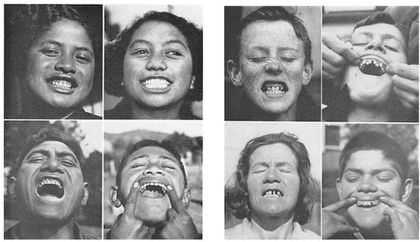
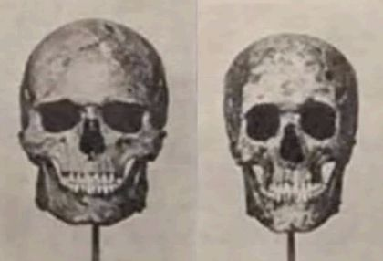
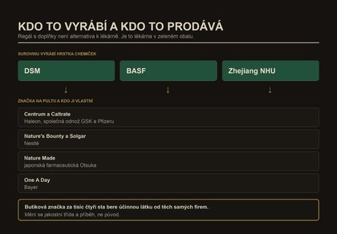
Protokol VÝŽIVY · český sourcing a první nákup
Český sourcing a první nákup. Kde vzít mléko, maso a vejce, která za to stojí.
4.9Recepty a nákup
Syrová kuchyně v receptech a co vzít do košíku v obyčejném řetězci.
Proč až teď: trénink je jen signál. Staví se ve spánku a z jídla, které už máš srovnané.
6 lekcí · 1 h 51 min čtení
5.1Trénink
Splity, intenzita, objem a jedna nedořešená věc, kterou v tom submodulu najdeš označenou.
5.1.1Zbylých 38 mýtů
5.2Hormony
Ne jako pilulka, ale jako výstup toho, co dělá zbytek života. A proč se hormonální hodnota nedá číst sama.
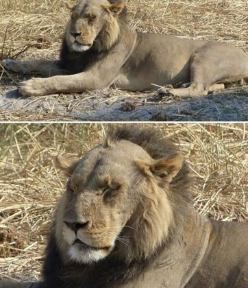
5.3Regenerace a detox
Cesty, kterými tělo odvádí odpad, a rozdíl mezi podporou a násilím.
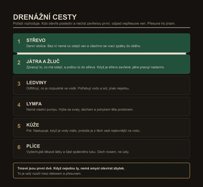
5.4Dlouhověkost
Co ve skutečnosti odlišuje lidi, kteří se dožijí, a proč to není nic z toho, co se prodává. **A druhá půlka: vzhled jako viditelný výraz vnitřního terénu.** Čtyři síly, které stavějí obličej, Weston Price a sourozenci, kost a kolagen, lymfa.
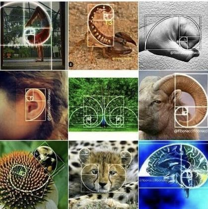
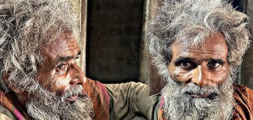
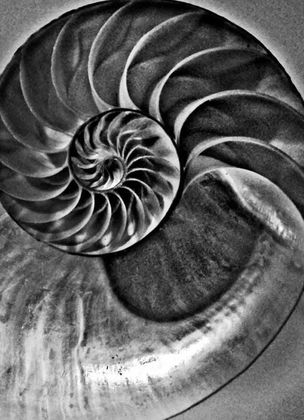
Protokol TRÉNINKU · výběr splitu
Výběr splitu podle toho, kolik dní v týdnu doopravdy máš.
◆
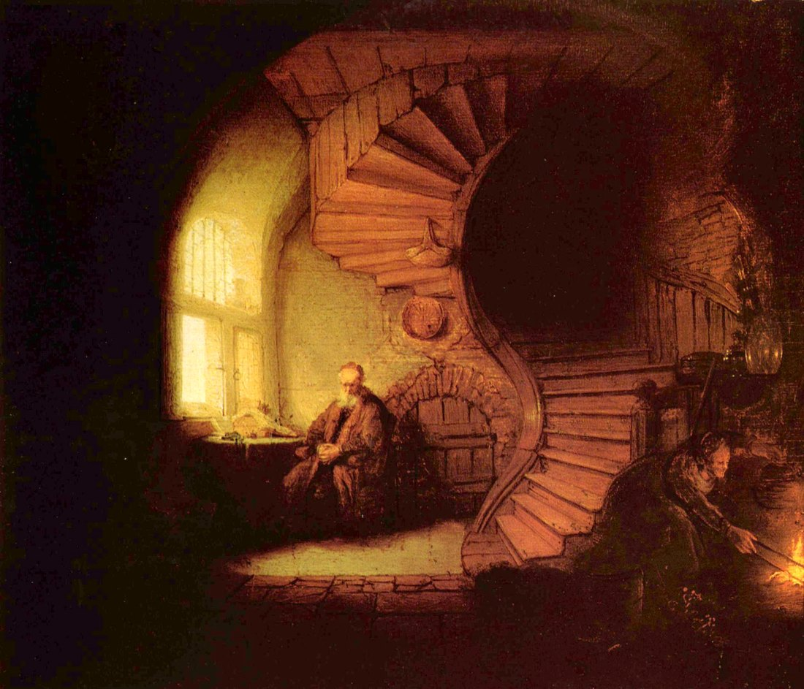
Rembrandt van Rijn · Filozof v meditaci · 1632
Modul 6
Mysl a duch
Poslední a nejdůležitější. Člověk, který žije ve strachu, si nepomůže žádným jídlem.
12 lekcí · 2 h 37 min čtení
6.1Myšlenka a zkušenost
Odkud se bere to, co prožíváš. A rozdíl mezi změnou myšlení a změnou vztahu k myšlení, který rozhoduje o všem.
6.1.1Myšlenky: nejsi ten, kdo je myslí
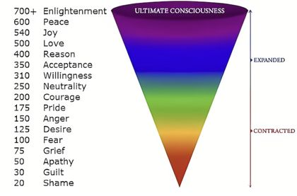
6.2Trauma a příběh, který si opakuješ
Proč není pravda, že událost z dětství působí dodnes, a proč je pravda něco jiného, co je horší.
6.2.1Trauma: ne událost, ale vztah k ní
6.2.2Trauma podruhé: příběh, co se opakuje
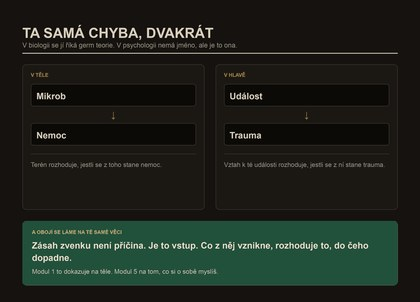
6.3Nervový systém a únik
Nejostrší část celé Akademie. Proč regulace nervového systému funguje a přesto ne z toho důvodu, který se uvádí.
6.3.1Nervový systém není rozbitý
6.3.2Otázka PROČ
6.3.3Psychologie zvládání
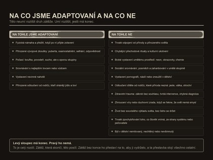
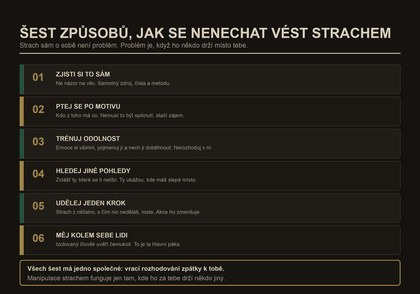
6.4Víra a odevzdání
Část, kterou většina zdravotních kurzů nemá, a přitom je to ta, která rozhoduje o zbytku.
6.4.1O víře
6.5Protokol MYSLI
Praktický týden. Šest kroků, jeden po druhém, včetně afirmací přepsaných podle toho, co skutečně funguje.
◆
Každý modul staví na předchozím a nic v něm nezazní bez vysvětlení.Kdo přeskočí rovnou na viry, bude mít pocit, že tomu rozumí, a bude se mýlit.